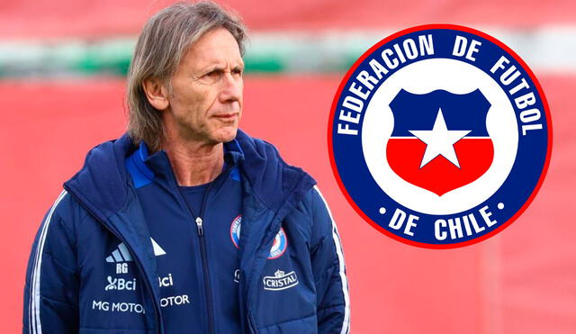
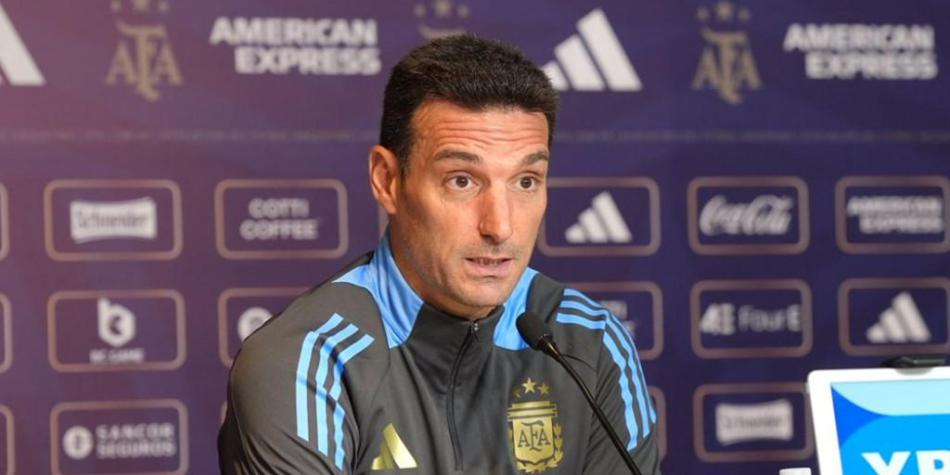
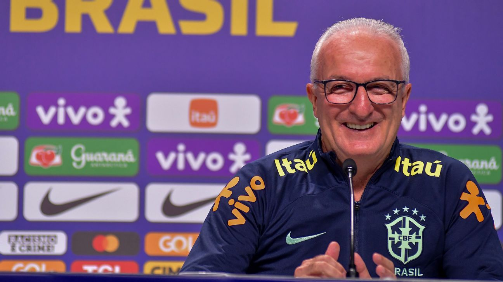
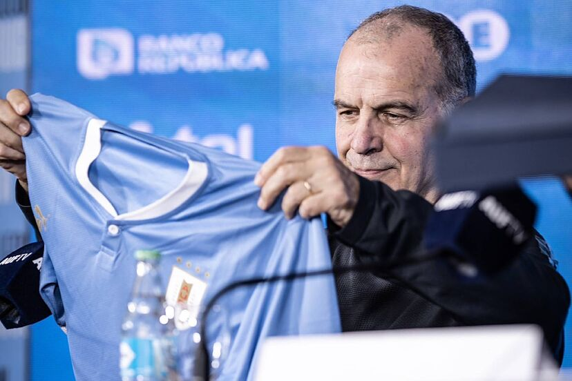
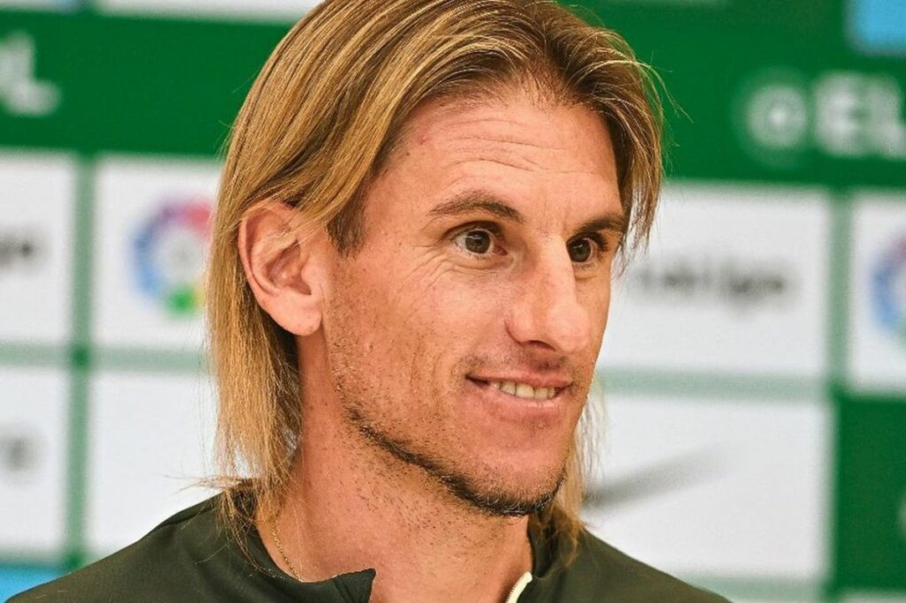
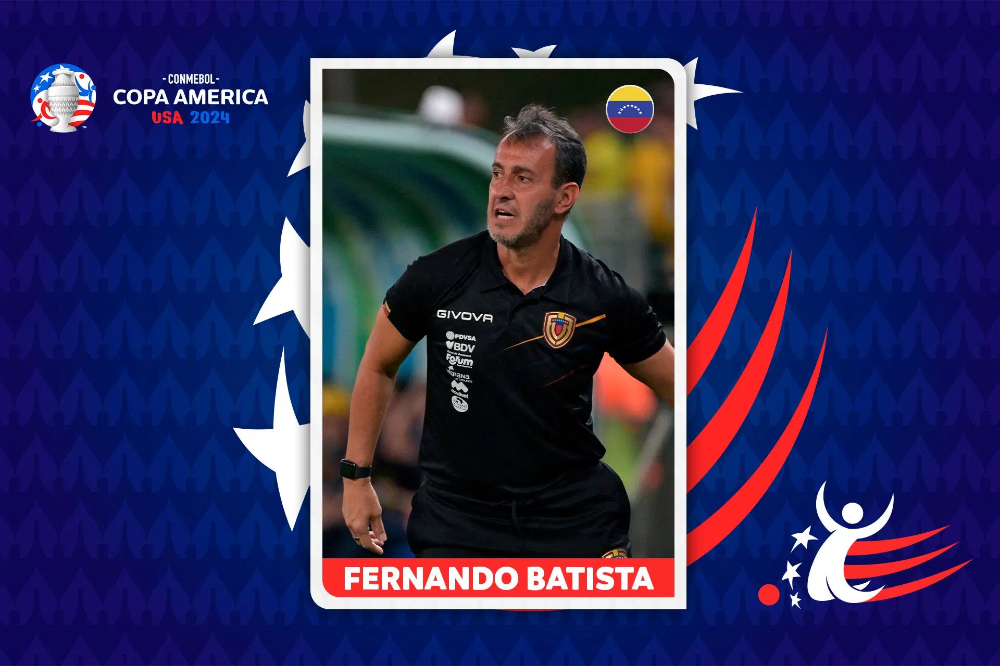

JORGE FOSSATI
Nacido en Montevideo en el año 1952, Fossati es un entrenador curtido entre el fútbol sudamericano y árabe. Entre sus mayores éxitos destacan un tercer lugar con la Selección Uruguaya en la Copa América 2004 y la Sudamericana 2019 con LDU.
TIGRE GARECA
Ricardo llega para recuperar las sonrisas y mirar con optimismo hacia el futuro con los grandes desafíos que tenemos”. Ricardo Gareca, nacido en Tapiales, Argentina (1958), es un entrenador de larga experiencia en el fútbol latinoamericano, con exitosos pasos por Argentina, Perú y Brasil.
LIONEL SCALONI
Lionel Sebastián Scaloni es un exfutbolista y entrenador de fútbol argentino. Como futbolista jugaba como lateral derecho o centrocampista. Wikipedia Nacimiento: 16 de mayo de 1978 (edad 46 años), Pujato, Argentina Entrenador: Selección de fútbol de Argentina Equipo entrenado: Selección de fútbol de Argentina (Director técnico, desde 2018)
DORIVAL JUNIOR
fue presentado como nuevo entrenador de la Selección de Brasil. En su presentación como nuevo entrenador de la Selección Brasileña, Dorival Júnior admitió que la Canarinha vive un momento muy difícil y que urge superarlo
MARCELO BIALASA
Con ilusión renovada y enfocado en lo que viene, Uruguay afronta esta Copa América frotándose las manos. El equipo que dirige Marcelo Bielsa viene de obtener resultados muy positivos en las Eliminatorias Sudamericanas, con la idea de juego del DT argentino calando de gran forma en el plantel
SEBASTIAN BECCACECE
Sebastián Andrés Beccacece (Rosario, 17 de diciembre de 1980) es un entrenador de fútbol argentino. Actualmente dirige a la Selección de Ecuador.
NESTOR LORENZO
entrenador de Colombia, igualó la marca histórica de Francisco Maturana al alcanzar 25 encuentros invicto. Lorenzo, que asumió el mando en 2022, dirigió a la selección en una racha invicta que incluye amistosos, eliminatorias para el mundial de 2026 y partidos de la Copa América

FERNANDO BATISTA
líder de Venezuela, dirige su primera CONMEBOL Copa América en 2024, enfocado en mejorar continuamente al equipo. Dirige a Venezuela desde 2023 y estará al frente de su primera CONMEBOL Copa América
GUSTABO
A lo largo de la historia, la tecnología ha jugado un papel primordial en el desarrollo de la vida material y cultural de los pueblos. En buena medida, el progreso humano está basado en la invención de procedimientos y mecanismos para la resolución de problemas concretos del quehacer cotidiano como las primeras técnicas utilizadas para encender fuego hasta las complejas máquinas del mundo moderno.